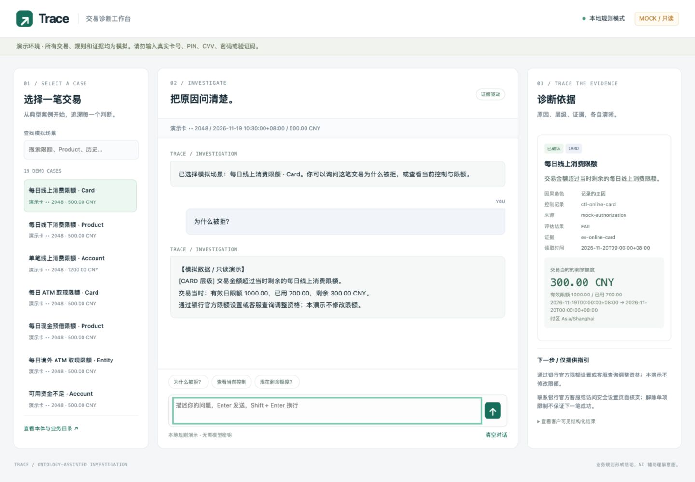
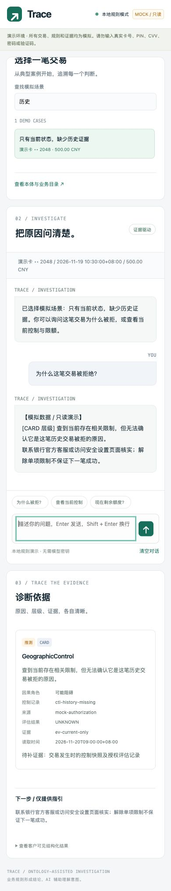

本地网页实现四层控制归因、七类拒绝原因、六类限额与证据解释。默认模拟数据，无需模型密钥和第三方必装依赖。
验收：PASS_WITH_NOTES · 43 项自动测试通过，桌面和手机交互已验证。
启动：python3 -m app.server，访问 本机工作台。
默认本地规则识别意图；可选模型适配只做意图分类。JSON 本体类图参与分类与指引匹配，提供 Turtle 与 SHACL 起步文件。真实银行、模型网关与生产权限需内部接入。

需求与计划
需求基线 · 实现计划 · 计划审查实现与验收
实现记录 · 验收报告 · 测试原始输出迁移与限制
内部补齐与迁移手册包括 16 项待确认定义、数据字段合同、模型接入、授权和生产部署差距。当前无银行状态修改接口，无生产认证；不能直接暴露外网。
移动端截图
